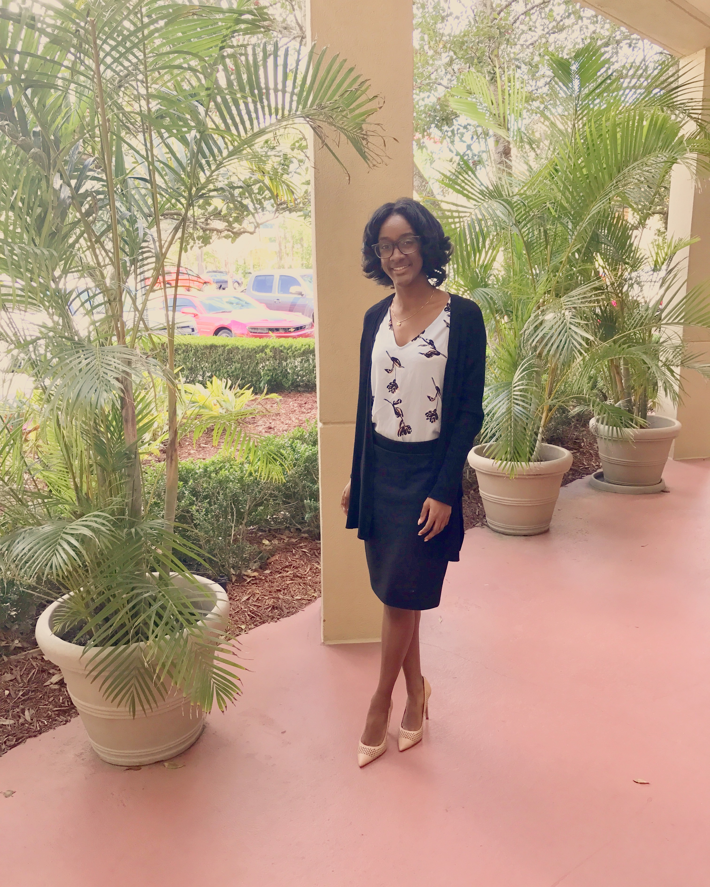

Hello, I am Morgan Smith! I am a recent certification graduate from Georgia Tech’s UX/UI Bootcamp. I specialize in User-centric design research, User Interface Development, Visual Prototyping and Wireframing, and Web Prototyping. I enjoy solving user problems that are impacting their everyday lifestyle. My skills include Figma, Adobe Suite, Miro, InVision, Canva, UX Research/Design, UI Architect, UI Design.

My UX Skills

User Research
I utilize my user research skills by conducting qualitative and quantitative research, creating information architecture and flow, by identifying user needs and planning user experience interviews, and by creating user personas and synthesizing user insights.
User Empathy
I utilixe my user empathy by trying to understand the user through conducting user interviews, connecting with stakeholders, and conducting surveys to gain insight.
Qualitative Interviews
I utilize qualitative interviews to build response off one another by asking open ended questions.
My Work

Plantae
For this project, my team and I created a mobile app for new plant owners and plant enthusiasts that would help with overall plant maintenance.
Modern Mobile Travel App
For this project, I developed a mobilr travel app that would allow users to book all-inclusive trips more efficiently.